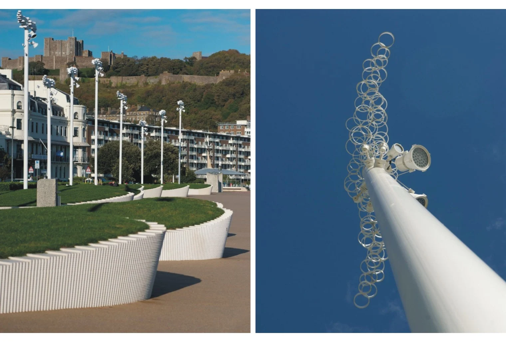
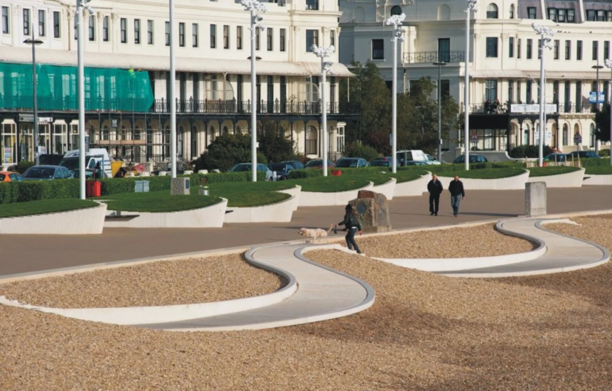
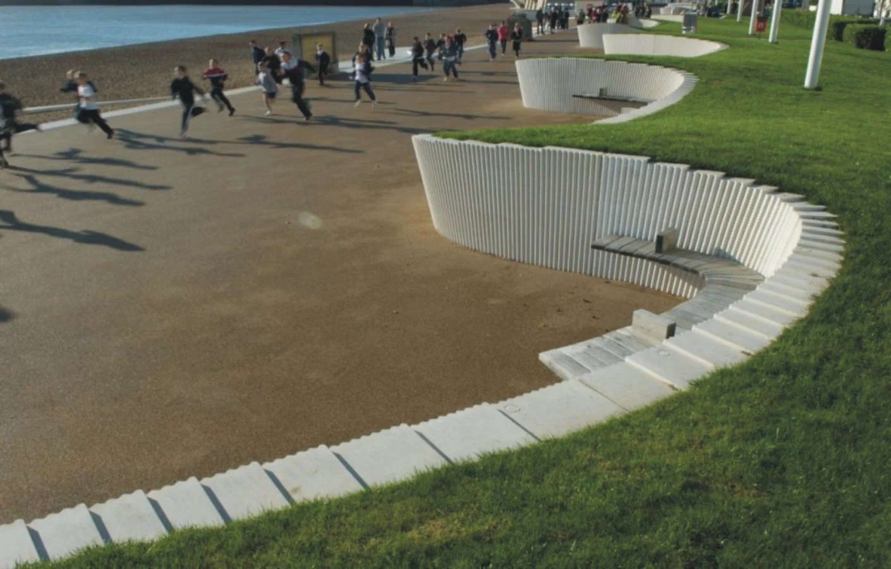
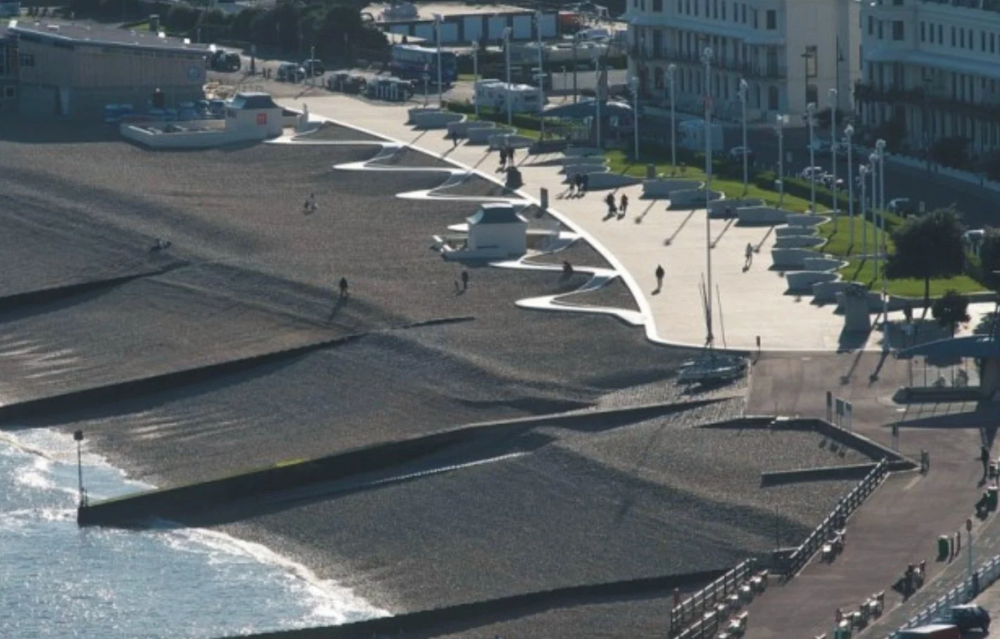
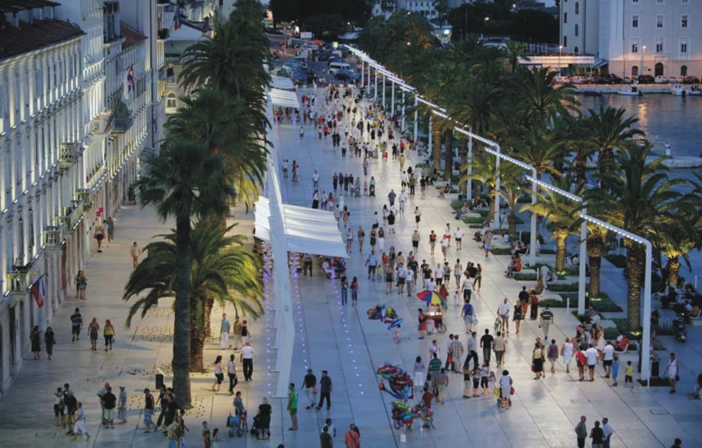
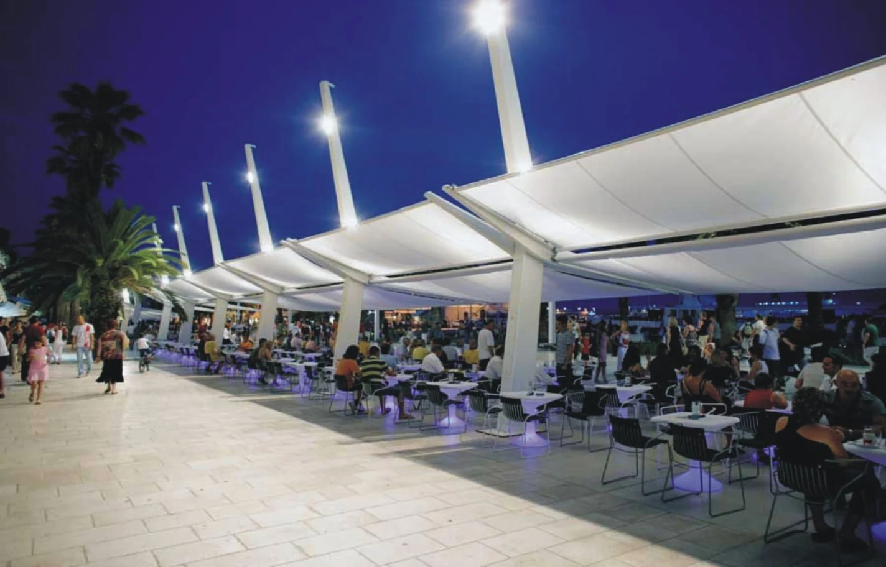
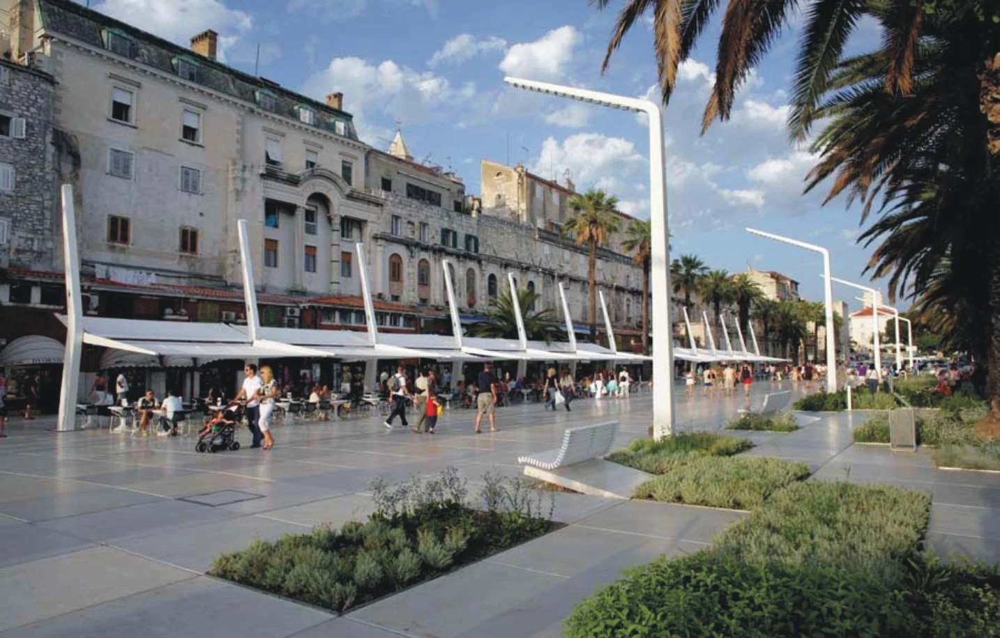
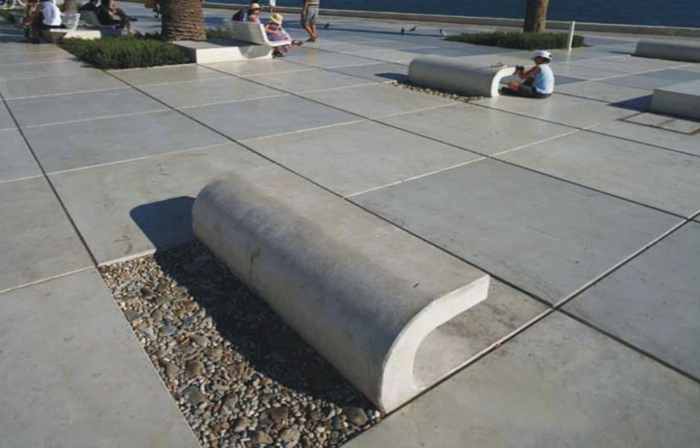

바다는 무엇을 따라야 하는가 — 연재 2회
바다는 무엇을 따라야 하는가? II
Maritime space follows something? II
이현성
(주)에스이공간환경디자인그룹 SEDG 공동대표
(사)한국도시설계학회 안전디자인연구회 부위원장
armula@gmail.com
본 기고에서는 현재 진행되고 있는 해양 공간환경의 최근 프로젝트들을 순차적인 연재를 통해 어떠한 새로운 가치들을 중요시 여기고 구현하고 디자인하려 했는지 살펴보고 있습니다. 해양공간환경의 접근성(Accessibility), 정체성(Locality), 연계성(Linkage), 사용성(Mixed-Use)의 4가지 관점으로 살펴보며 지속가능한 삶의 무대로서 해양 연안 공간환경을 어떻게 바라보고 디자인 할 것인가? 대한 고민을 사례 중심으로 보여드리고 있습니다.
1. 영국 켄트 도버 에스플라나드(Kent Dover Esplanade)
영국 켄트 도버의 워터루 크레센트 지역에 위치한 켄트 도버 에스플라나드는 건축가 톤킨 리우에 의해 설계되었으며 2010년 준공된 6,000평방 미터의 해변 산책로입니다. 전체적인 디자인은 파도의 형태를 모티브로 건축되었으며 웨이브를 띠면서 층을 이루는 흰색 콘크리트 경사로가 설치되어 사용자의 접근을 용이하게 하고 있습니다.
와인통으로 사용되는 떡갈나무로 벤치를 마감하고 LED조명을 적극 사용하여 야간 경관의 조도와 이미지를 향상시키고 있습니다.
또한 조명 기둥 또한 파도의 기포를 형상화 한 디자인으로서 재미와 함께 바다의 정체성을 담아내고 있습니다.
그림 2 콘크리트 경사로 세부면과 벤치
그림 3 웨이브 형태의 수변 산책로
그림 4 파도의 기포를 형상화한 가로등



<IMAGE : www.contemporist.com / www.e-architect.co.uk\>그림 1 에스플라나드 전경 및 해변 방사제

2. 크로아티아 리바 스플리트 워터프론트(Riva Split Waterfront)
2005년 3LHD 건축가에 의해 설계된 리바 스플리트 워터프론트는 2009년에 완공된 도시 워터프론트 프로젝트로서 거리의 전면에는 1700년 전 로마 황실의 집이었던 Diocletian's Palace(UNESCO World Heritage Site)가 있고, 수세기를 걸치면서 물가를 따라 주택들이 들어서기 시작하여 현재 총 250m 길이 55m로 공공 광장, 산책로 등 지역의 행사를 위한 공공공간으로 조성되어 있습니다.
디자인의 개념을 살펴보면 산책로의 정체성을 강화하기 위하여 거리의 구성요소를 하나의 일관된 컨셉으로 통합하였으며 야자수 2열 배치를 통해 건물 인접부, 중앙부, 해안가 영역을 구분하였고 페이빙디자인은 1.5x1.5m의 정사각형 모듈 패턴으로 배치하여 간결하게 마무리 하였습니다.
차양을 위해 대형 접이식 햇볕 차단막을 설치하고 염분이 강한 공기에 견딜 수 있는 지중해성 식물들을 식목하는 디자인을 시행하였습니다.
개방형의 공간디자인은 방문객의 접근성 및 많은 자연감시 유도로 안전한 공간을 창출하게 합니다. 또한 파란색의 바다와 녹색계열의 야자수와 조화 되고 무채색 계열의 건축군들과 어울릴 수 있도록 백색계열의 시설물들을 디자인 하여 편안하고 조화로운 공간을 창출하고 있습니다.
그림 5 리바 스플리트 워터프론트

그림 6 대형 접이식 태양 차단막

그림 7 가로등과 벤치

그림 8 워터프론트의 벤치

3. 일본 무라사키카와 마이타운 마이리버
1953년 6월 일본 서쪽 지역에 집중호우가 발생하여 4일 동안 연간강우량의 1/3이 내리면서 당시 일본 후쿠오카 키타큐슈시 무라사키가와에 위치한 무라사키 강이 흐르는 오구라시의 80%세대가 침수 피해 입게 되었고 이를 위한 치수 기능의 정비가 요구되었습니다. 먼저 1990년도~2011년도까지 우선적으로 JR 가고시마혼센철교에서 나카노시마교 '바람의 다리'까지 약 1.1km, 92ha에 대해 사업진행이 되고 치수 및 교통정체 완화, 교각의 노후화에 대응하기 위하여 100개의 다리를 정비 혹은 신설하였으며 특히 10개의 다리는 통일감 있는 주제(자연)에 맞는 디자인이 진행되었습니다.
상세한 디자인 기술과 전략등을 살펴보면 홍수 방지를 위하여 하천 폭 확장 및 강의 바닥을 깊게 하고 이에 맞추어 다리 신설하였고 교통 체증을 줄이기 위하여 다리를 신설하고 1993년 도로망 정비에 의해 일방통행을 해제하였습니다. 또 쇼와 초기에 지어진 다리의 노후화 문제 해결을 위해 다리 교체를 진행하고 그 외 가치야마공원 대잔디 광장, 폭포, 해변광장, 시코우즈 물 환경관 등을 조성하였습니다.
디자인 계획 다리의 폭 확장
호안의 경우 자연석 설치를 통해 빈틈을 의도적으로 조성하여 물고기 둥지와 이끼의 서식처 제공등 생태계를 배려하는 디자인을 시행하고
가치아마공원 대잔디광장은 시민들의 휴식처 장소로 제공됨과 동시에 피난지 및 헬기 창륙장으로 이용되는 방재 거점화 하였습니다.
폭포
시민아이디어로 조성된 50m 폭으로 얕은 웅덩이와 분수 갖춘 휴식처 처―공
해변 모래톱 광잠
사코우즈 물 환경관
쌔―도시대에 있었던 해변과 간척지 이미지화． 뭅고기 몰 수 있는 친수공긴 수제힝토상 지역정비부문 타 3시선에서 수생19田년） －강． 묠에 대한 체헝형 학습시설로 강 속을 관칠할 수 있는 수중 창 존재
종합 결과
－일본 내 수제항토상． 국토 교통성이 지정한 도시경관대상 아픔다운 거리 대상 수생2O7년） －미국 『떼단611가 1987년에 지정한 xceece on the 6\en맣싱 2년 연속 수생20D7년） -Al민모니터 설문결과 수질． 경관． 안전성 등에서 70`80％만족도（2慨년） －오구라성 주변의 관굉객 1990년 22안영에서 2YJ5년 47안영으로 증가
참고문헌
권영상·조민선, 「수변공간 활성화를 위한 도시계획 및 설계방향」, 건축도시공간연구소, 2010.
김해련 외, 「대한민국 디자인 전략 2020보고서」, 한국디자인진흥원, 2011.
국토해양부외, 「해양 공간의 가치 창출을 위한 해양디자인기술 개발 기획연구, 2012
이현성외, 「해양공간디자인」, 미세움, 2013.
이 글의 판본과 수록 정보 ＋
이현성 명의가 확인된 판본 있음; 최종 집필 범위 확인 필요
연재 회차별로 분리. 같은 회차의 감수·수정본만 연결.
- 수록 자료
- 20160225 집필2 (이현성).hwp
- 자료의 날짜 단서
- 2016-02-25 · 실제 발표일과 다를 수 있습니다.
- 관련 파일
- 2개 / 서로 다른 본문 2종